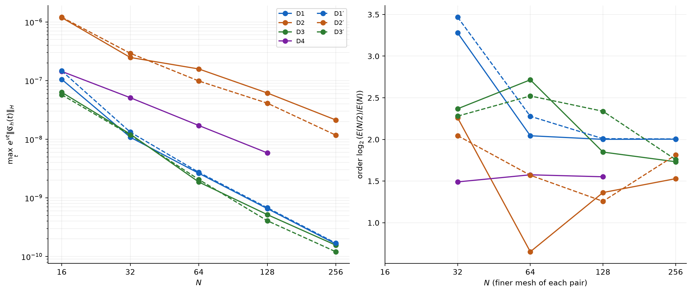

The existence of exact high-frequency spurious eigenpairs of the standard Galerkin scheme, for meshes with at least 512 elements (Theorem 3.1), is proved in Lean 4 with Mathlib.
Abstract
We compare two cubic Hermite Galerkin semidiscretizations of the Korteweg-de Vries equation on a bounded interval with boundary dissipation. They use the same trial space. The first is the weighted scheme considered in our previous paper (arXiv:2610.39269), called the W-scheme. It has mesh-uniform regularity: the discrete semigroups of the linearized equation inherit Crandall-Pazy regularity and Kato smoothing, with bounds uniform in the mesh size $h$. The second is the standard Galerkin method in $L^2$, called the S-scheme. It has no mesh-uniform regularity. For the W-scheme, the full error and the ordering error converge at an algebraic rate in $h$, uniformly on $[t_0,\infty)$ times small balls of $L^2$ for any fixed $t_0>0$. They are bounded by $Ch^p\varepsilon$ and $Ch^p\varepsilon^2$, respectively, where $\varepsilon$ is the size of the datum and $p>0$. We prove that neither bound holds for the S-scheme by using exact high-frequency spurious eigenpairs of the S-scheme. The existence of such eigenpairs for fine meshes with at least 512 elements has a proof checked by Lean 4. Computations compare the two schemes on unit-norm data built from these eigenfunctions, on 512, 1024 and 2048 elements. The full error of the S-scheme stays at $4.6\times10^{-2}$. That of the W-scheme is at most $2.2\times10^{-9}$. The ordering error of the S-scheme stays at $9.6\times10^{-6}$. That of the W-scheme falls from $2.3\times10^{-9}$ to $1.4\times10^{-10}$. Their ratio grows from $4.2\times10^3$ to $6.6\times10^4$.
Problem
The question is how much mesh-uniform regularity improves Galerkin error estimates. The test case is the KdV equation on a bounded interval with boundary dissipation, comparing a weighted cubic Hermite scheme (W-scheme) with the standard L^2 Galerkin scheme (S-scheme) on the same trial space.
Approach
Exact high-frequency spurious eigenpairs of the S-scheme are constructed and used to show that the algebraic-rate full-error and ordering-error bounds of the W-scheme fail for the S-scheme. The existence of these eigenpairs for uniform meshes with at least 512 elements is proved in Lean 4, with the mesh threshold lowered in successive iterations from 10^200 down to 512. The remaining error-gap proofs are done by hand. Numerical experiments on unit-norm data built from the eigenfunctions compare the two schemes.
Results
On 512–2048 elements, the S-scheme full error stays at 4.6e-2, while the W-scheme full error is at most 2.2e-9. The S-scheme ordering error stays at 9.6e-6, while the W-scheme ordering error decreases at about a factor of 4 per mesh halving. The ratio of ordering errors grows from 4.2e3 to 6.6e4.

Figure 1: W, \varepsilon=1/8 . Left: maximum of e^{\nu t}\left\lVert\mathfrak{C}_{h}\right\rVert_{H} over accepted points; dashed: held-out data. Right: orders \log_{2}(E(N/2)/E(N)) . Data: the accepted samples of this subsection.